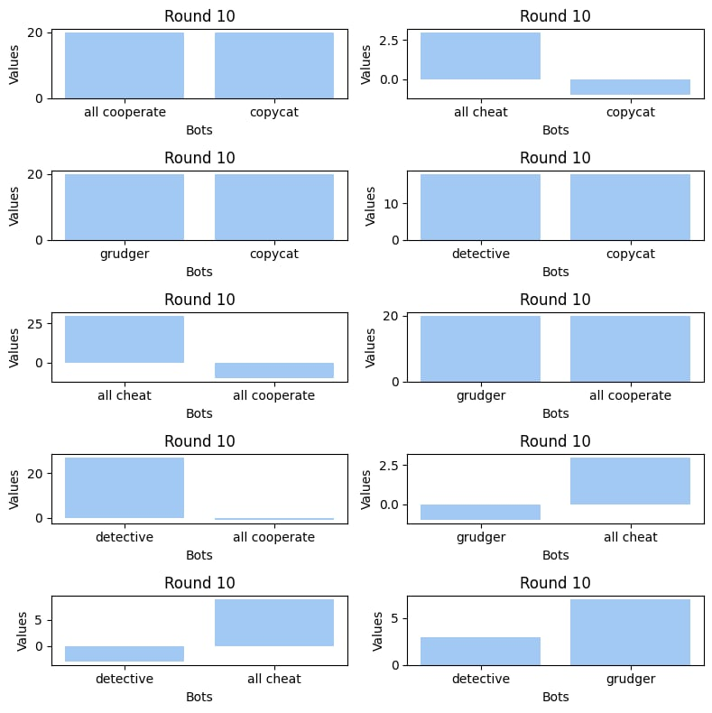

Concepts of game theory and its visualization

The problem
This was our second-year project in Computational Mathematics. We wanted to learn the core ideas of game theory (zero-sum games, saddle points, Nash equilibrium and mixed strategies) and then see them at work in a game we could simulate.
The game
We used the game of trust, a repeated prisoner's dilemma made popular by Nicky Case's The Evolution of Trust. Each round, both players choose to cooperate or cheat. Putting a coin into the machine costs you one coin and gives the other player three. In a single round, cheating is always the better reply, so mutual cheating is the Nash equilibrium. Over many rounds the picture changes.
Our approach
- Theory. We worked through two-person zero-sum games, saddle points, mixed strategies and the computation of optimal mixed strategies.
- Strategies as code. We wrote seven strategies in Python, each as a function of the move history: Copycat, All Cooperate, All Cheat, Grudger, Detective, Copykitten and Simpleton.
- Tournament. Every pair of strategies played a 10-round match. Each round's moves and scores were written to a CSV file and then plotted.
- Mistakes. We looked at what happens when a player makes an unintended move.
Results
- When both players cooperate throughout, both get the highest total, 20 coins each after 10 rounds.
- When both cheat, both get 0, matching the Nash equilibrium of the single-round game.
- Unconditional cooperation is easy to exploit: All Cheat beats All Cooperate 30 to −10, and Detective also takes advantage of it.
- Copycat ties every cooperative strategy, but it has a weak spot: if one of two Copycats cheats by accident, the other copies it and they fall into an endless cycle of retaliation that started from a single mistake.
Where it led
- I want to come back to game theory and combine it with queueing models, for example bargaining between players whose arrivals follow a Markovian arrival process.